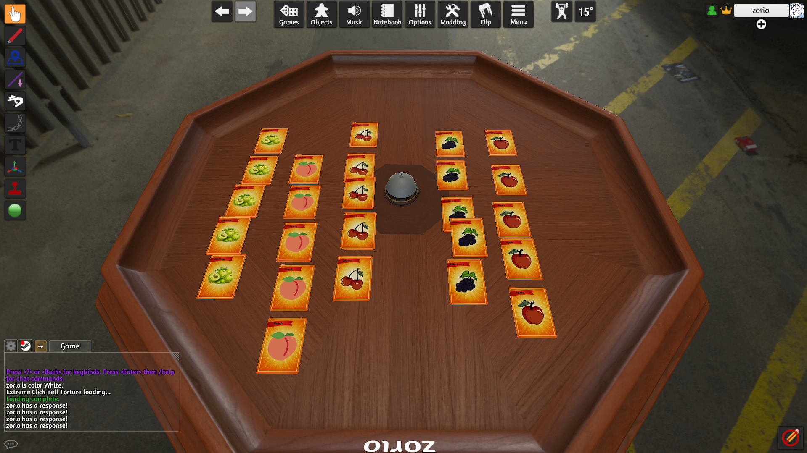
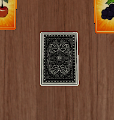

Step into a shady, midnight fruit market where high-quality stock is scarce. You are a vendor hustling to collect a "Perfect Lot" of five identical fruits before your rivals do.
Fruit Fraud blends Real-time Set Collection with cutthroat Social Deduction. It's fast, loud, and full of deception.


5 cards are hidden face-down in the center. No one knows which fruits are "rare" or impossible to collect this round.
Players rapidly pass 1 card clockwise. Keep your eyes on what your neighbors are hoarding!
Round ends? Countdown "3... 2... 1..." and race to smack the service bell. The winner gets a massive advantage.
The bell winner initiates a Forced Trade. Negotiate, lie, and use reverse psychology to steal the cards you need.